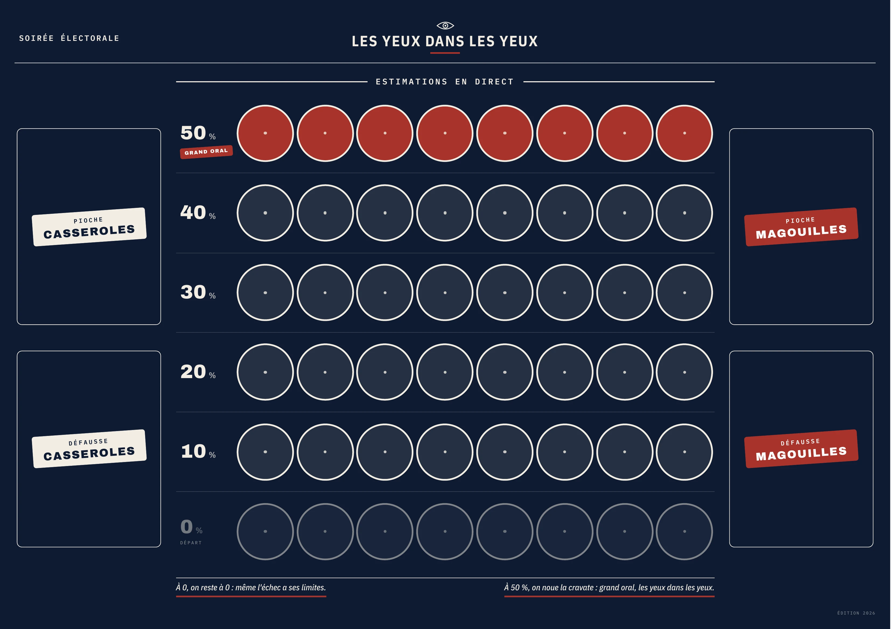
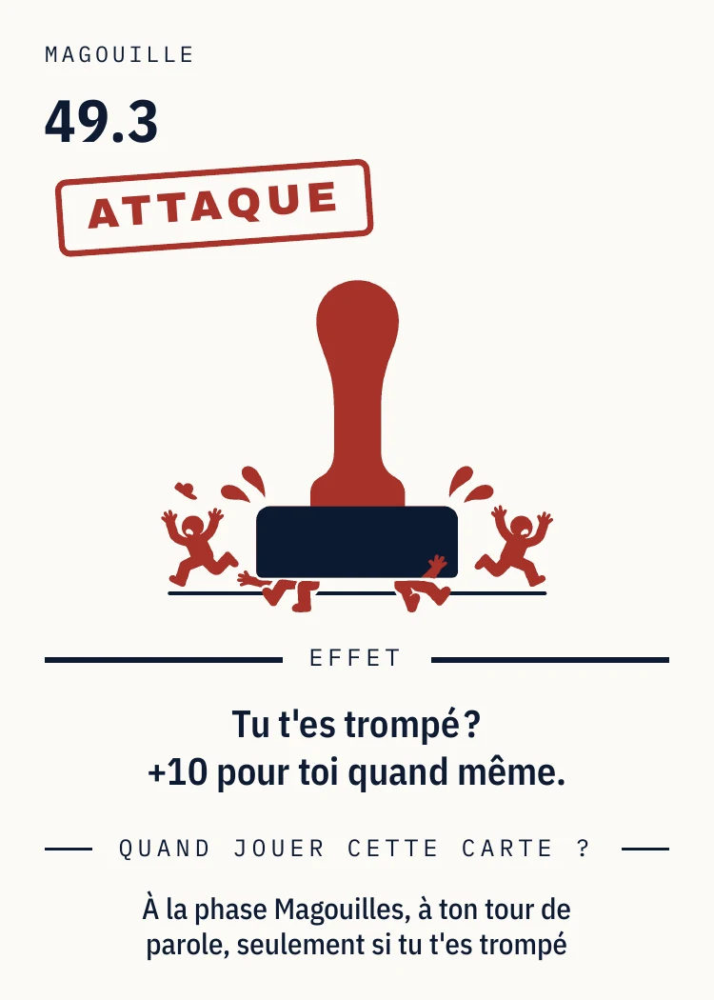
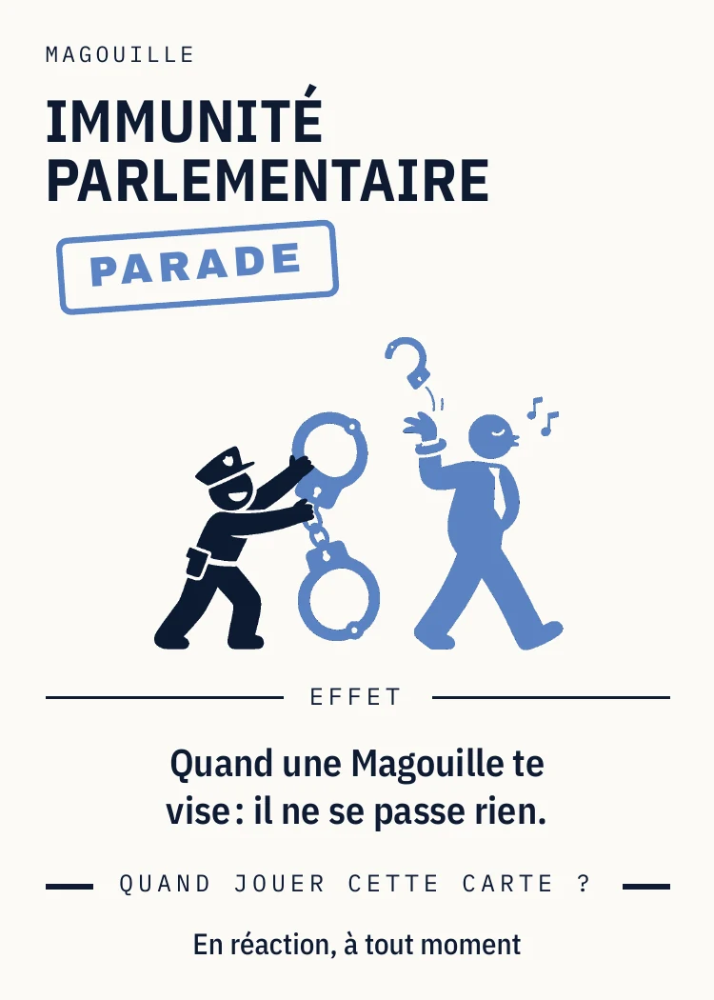

Tout est vrai.
Sauf ce qui est faux.C'est bien tout le problème.
Vous êtes candidats. Il vous reste des casseroles à faire passer pour des intox.
dans les yeux



Tout est vrai, et ça se prouve
Du jugé et du déclaré public, rien d'autre. Chaque carte a sa page au Registre des scellés, livré avec le jeu. Rien à plaider. Pièces en annexe.
Tous les bords, toute la Ve
La carte dit le fait, la table décide du reste. De 1958 à 2026, même barème pour tous les bords. Le seul endroit où ils sont traités pareil.
Un gisement renouvelable
2 700 faits identifiés, 200 cartes en boîte. Le reste attend son millésime. La matière première se renouvelle à chaque législature, sans effort de notre part.
100 Casseroles (50 Info, 50 Intox, 200 visées en boîte) · 25 Éditions spéciales · 50 Magouilles en 12 types · 16 bulletins · le plateau des estimations, de 0 à 50 % · la cravate du favori · règle en 1 page et règle complète · le Registre des scellés, la preuve de chaque carte.
Quentin Grimal
Quentin Grimal fait de la publicité le jour. Le soir, il recopie : comptes rendus d'audience, rapports de la Cour des comptes, archives de l'INA. Il n'invente rien. Il n'a pas eu besoin.
Les yeux dans les yeux est son premier jeu. Une table de huit, un verre, une règle : on ne rit que de ce qui est arrivé.
Vous éditez des jeux ?
Le prototype est complet, joué, et tient dans une enveloppe. Le dossier est en ligne. La règle complète et le Registre des scellés sont à vous sur simple mail, en PDF ou en boîte.
contact@lesyeuxdanslesyeux.info · Prototype aux Nuits du Off, Festival International des Jeux de Cannes, 23 au 27 février 2027